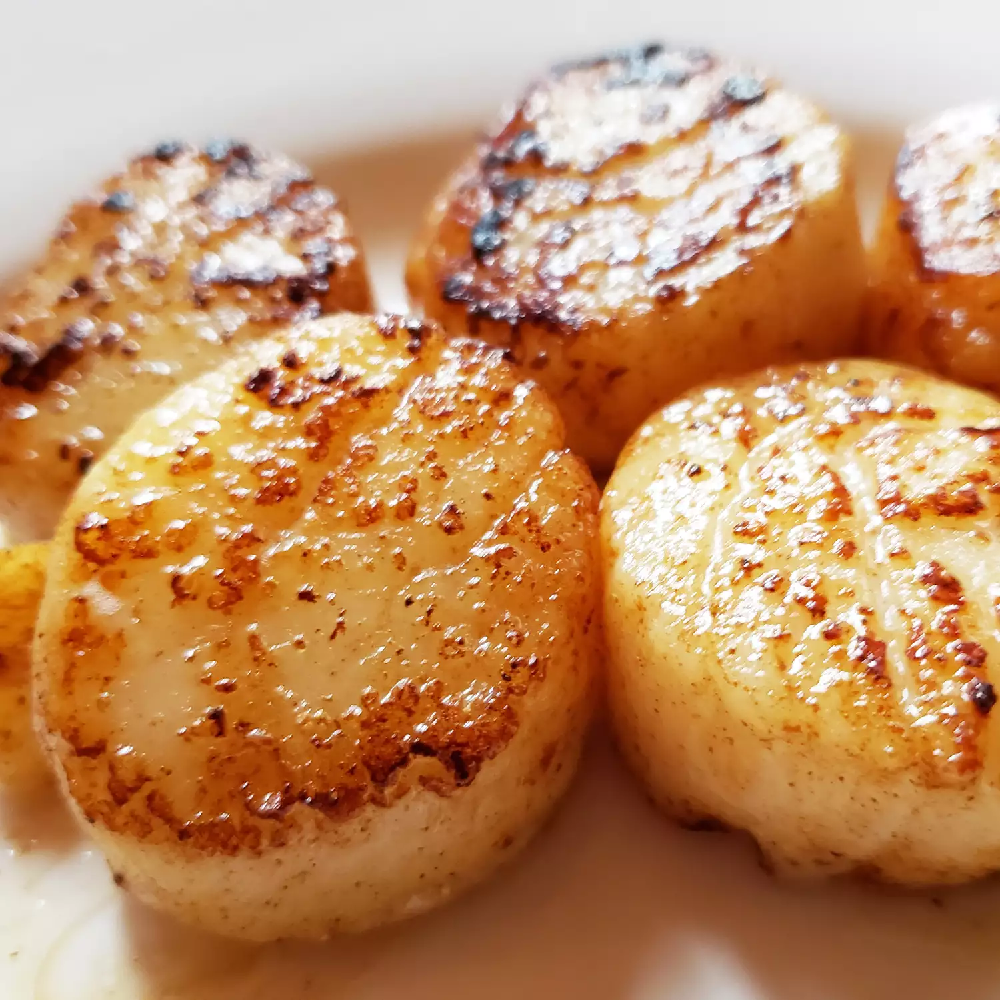

Scallops

Description
In this simple scallop recipe, large sea scallops are sautéed in butter and garlic and served with a lemon-butter sauce. They will melt in your mouth!
Ingredients
- Butter
- Scallops
- Garlic
- Lemon Juice
- Seasoning
Steps
- Cook the garlic in melted butter.
- Cook the scallops on both sides until opaque, then transfer to a platter.
- Whisk the lemon juice and seasonings into the butter, then pour over the scallops.